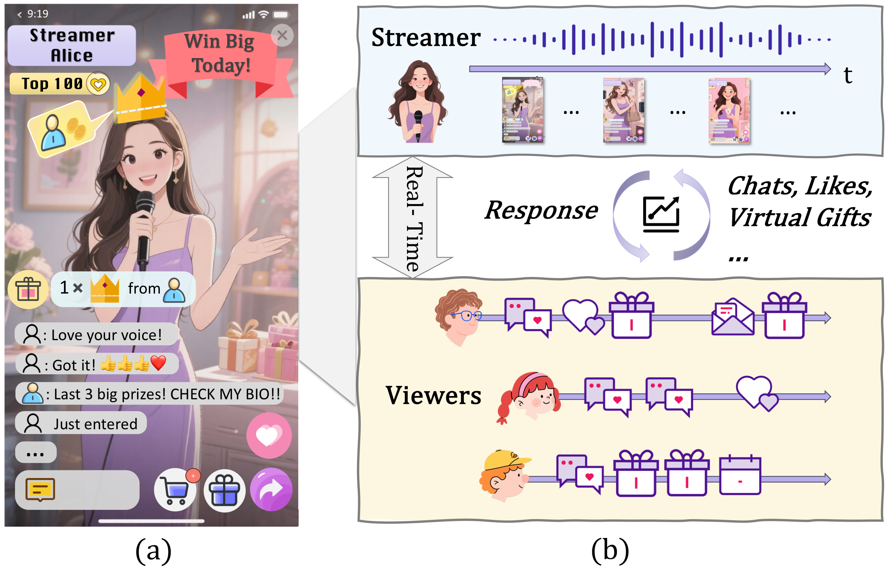
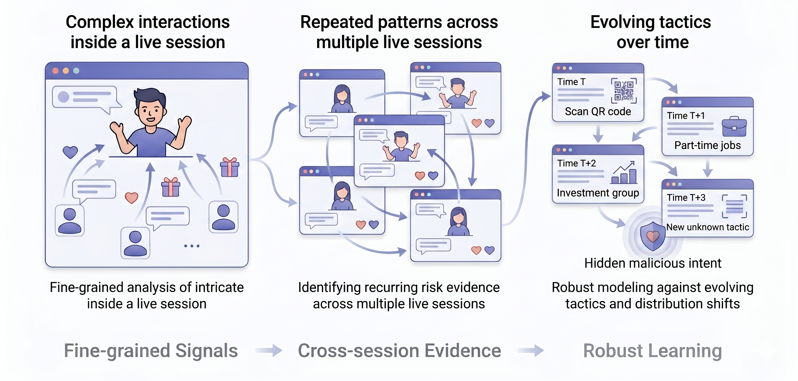
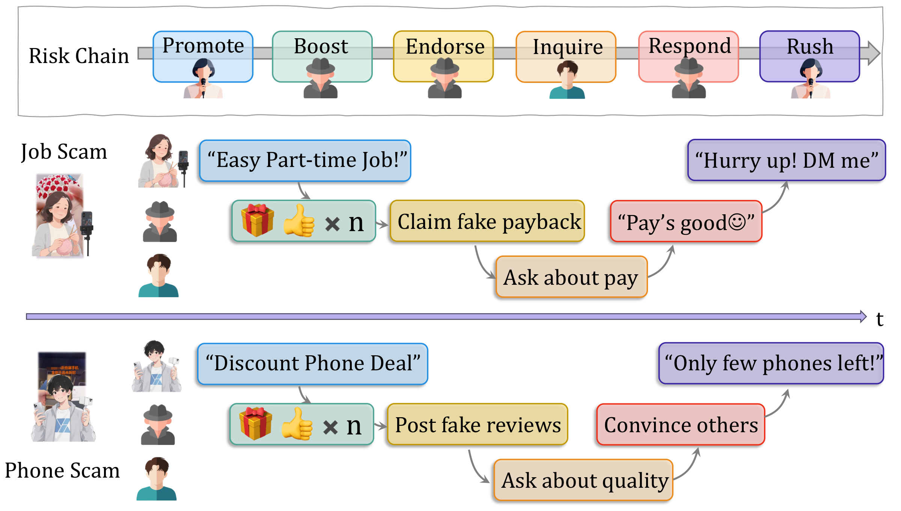
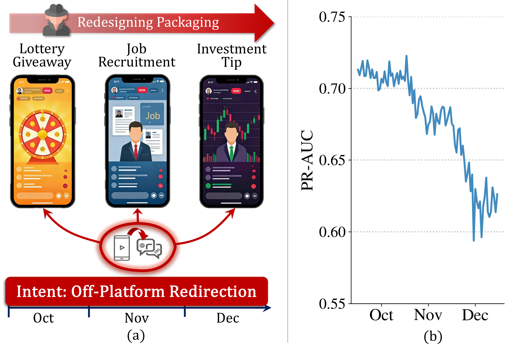
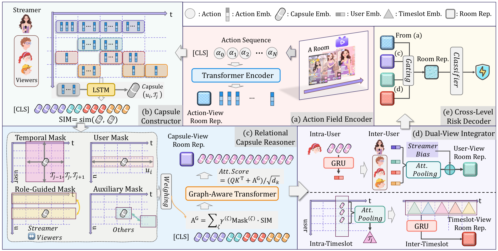
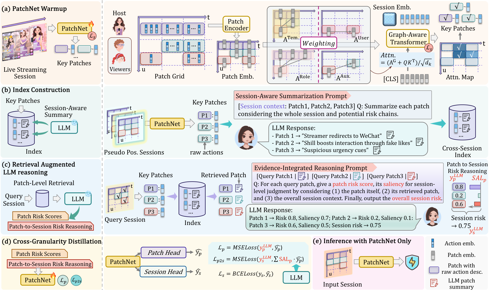
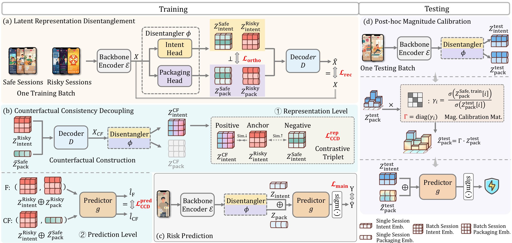

① Hidden Risk Signals
Risk evidence is often buried within large amounts of normal user interactions.

Understanding Behaviors
↓
Discovering Patterns
↓
Handling Evolution
Public benchmark for live streaming risk assessment

Risk evidence is often buried within large amounts of normal user interactions.

Similar malicious patterns repeatedly appear across different live rooms.

Attackers continuously modify surface behaviors to evade detection.

🧩 Live or Lie
Understanding localized risk signals from complex interactions.
Authors: Yiran Qiao et al.
KDD 2026
Live-streaming risk often hides in long, noisy interaction sequences. We propose Action-aware Capsule Multiple Instance Learning (AC-MIL), which organizes streamer–viewer behaviors into user–timeslot capsules and reasons over their relations for room-level risk detection under weak supervision.
@inproceedings{qiao2026live,
title={Live or Lie: Action-Aware Capsule Multiple Instance Learning for Risk Assessment in Live Streaming Platforms},
author={Yiran Qiao, Jing Chen, Xiang Ao, Qiwei Zhong, Yang Liu, Qing He},
booktitle={Proceedings of the 32nd ACM SIGKDD Conference on Knowledge Discovery and Data Mining V. 1},
pages={1182--1193},
year={2026}
}
🔍 Deja Vu in Plots
Discovering recurring scripts through cross-session evidence.
Authors: Yiran Qiao, Xiang Ao, Jing Chen, Yang Liu, Qiwei Zhong, Qing He.
SIGIR 2026
Malicious live-streaming scripts often reappear across rooms with surface variations. We build a retrieval-augmented LLM framework that summarizes historical risk patches, retrieves cross-session evidence, and distills reasoning signals into an efficient PatchNet for deployment.
@inproceedings{qiao2026dejavu,
title={Deja Vu in Plots: Retrieval-Augmented LLMs for Cross-Session Evidence},
author={Yiran Qiao, Xiang Ao, Jing Chen, Yang Liu, Qiwei Zhong, Qing He},
booktitle={Proceedings of the 49th International ACM SIGIR Conference on Research and Development in Information Retrieval},
year={2026}
}🦎 Outsmarting the Chameleon
Building robust models against evolving tactics.
Authors: Yiran Qiao, Jing Chen, Jiaqi Xu, Yang Liu, Qiwei Zhong, Xiang Ao.
KDD 2026
Attackers frequently change surface tactics while preserving malicious intent. We introduce a counterfactual decoupling framework that separates intent from packaging in latent space and enforces consistency under tactical distribution shifts.
@inproceedings{qiao2026chameleon,
title={Outsmarting the Chameleon: Counterfactual Decoupling for Tactical OOD Shifts},
author={Yiran Qiao, Jing Chen, Jiaqi Xu, Yang Liu, Qiwei Zhong, Xiang Ao},
booktitle={Proceedings of the 32nd ACM SIGKDD Conference on Knowledge Discovery and Data Mining V. 2},
year={2026}
}